参加2019年四季度居民消费价格预期调查的专家及相关专业人士317人，收回有效问卷317份。与上期和去年同期相比，四季度（本期）居民消费价格总水平和主副食品价格继续以缓涨预期为主，但看涨情绪大幅攀升。受“房住不炒”政策基调不变的影响，三季度我省大部分地区房地产市场显现降温迹象，这在一定程度上拉低了四季度商品房总体价格预期。与上期相比，本期商品房总体价格预期明显转冷，由三季度的以缓涨预期为主转为以稳中缓涨预期为主。
一、居民消费价格总水平继续缓涨
与2019年三季度相比，预计四季度居民消费价格总水平上涨305人，占比96.21%，其中预计缓和上涨206人、明显上涨99人，分别占67.54%、32.46%；预计基本持平10人，占比3.15%；预计有所下降1人，占比0.32% ；无人预计明显下降。
调查结果显示，超九成的人预计四季度居民消费价格总水平上涨，其中预计缓和上涨的人数接近七成；预计居民消费价格总水平基本持平的人数不足一成。总体来看，绝大多数人持居民消费价格总水平上涨预期，并以缓涨为主。
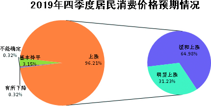
从居民消费价格总水平预期走势看，自预期调查工作启动6年来，对居民消费价格总水平持上涨预期的人数占比首次突破九成，较三季度的71.57%，增加了24.64个百分点；较去年同期的81.21%，增加了15个百分点。无论是环比还是同比，持看涨预期的人数占比均明显增加。
与上期26.47%的人预计居民消费价格总水平基本持平相比，本期下降了23.32个百分点，降至6年来的最低点；与去年同期的17.68%相比，本期下降了14.53个百分点。
本期预计居民消费价格总水平下降的人数仍占极少数，较上期的1.96%和去年同期的0.83%，分别下降了1.64和0.51个百分点。
调查表明，本期居民消费价格总水平继续以缓涨预期为主，但与上期和去年同期相比，持上涨预期的人数均有大幅提升，攀升至6年来的最高点。
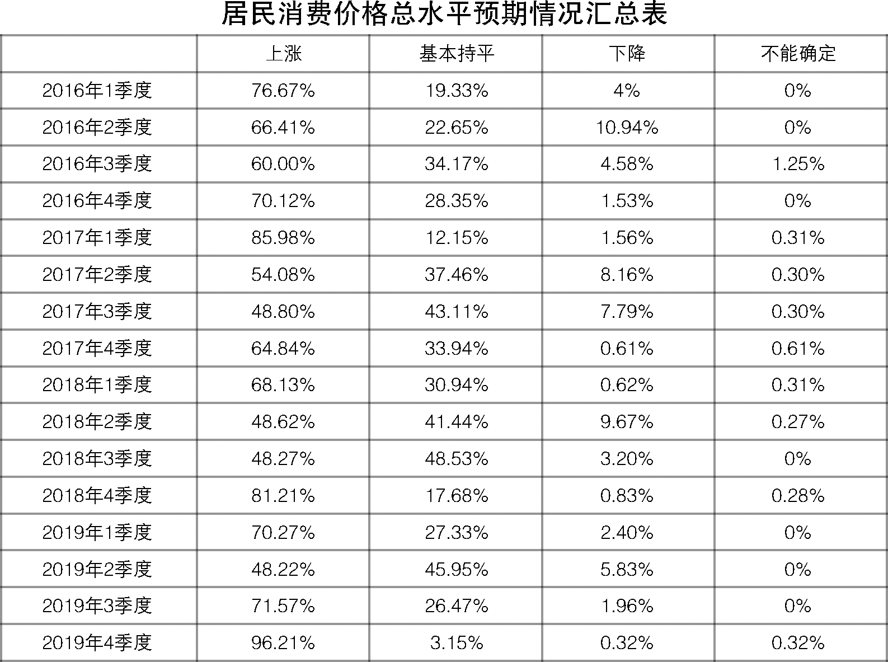
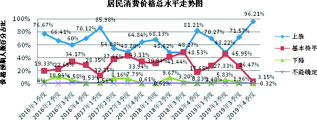
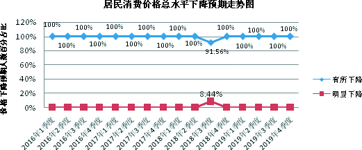
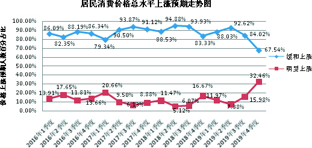
二、主副食品价格预期继续缓涨
与2019年三季度相比，预计四季度主副食品价格上涨294人，占比92.74%，其中预计缓和上涨171人、明显上涨123人，分别占58.16%、41.84%；预计基本持平22人，占比6.94%；无人预计下降。
调查结果显示，超九成的人预计四季度主副食品价格上涨，其中持明显上涨预期的人数超过四成；预计主副食品价格基本持平的占比极少数。绝大部分人预计主副食品价格上涨，并以缓涨为主。
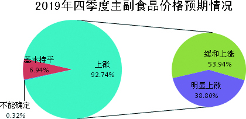
从主副食品价格预期走势看，与前三季度相比，四季度（本期）对主副食品价格持上涨预期的人数持续攀升至全年最高点，其中较上期增加了22.81个百分点，较去年同期增加了13.73个百分点。
与上期28.10%的人预计主副食品价格基本持平相比，本期减少了21.16个百分点；与去年同期的19.06%相比，本期减少了12.12个百分点。
相对于上期1.96%和去年同期1.38%的人预计主副食品价格下降，本期则无人持下降预期。
调查表明，本期对主副食品价格继续保持缓涨预期，但从环比和同比来看，看涨人数均有大幅提升。
关于大米、食用油和猪肉价格预期情况。本期预计大米价格上涨111人，占比35.02%，其中缓和上涨106人，明显上涨5人，分别占95.49% 、4.51%；基本持平203人，占比64.04%；有所下降2人，占比0.63%；无人预计明显下降。预计食用油价格上涨158人，占比49.84%，其中缓和上涨150人，明显上涨8人，分别占94.94%、5.06%；基本持平157人，占比49.53%；有所下降1人，占比0.32%；无人预计明显下降。预计猪肉价格上涨302人，占比95.27%，其中缓和上涨93人，明显上涨209人，分别占30.8%、69.2%；基本持平10人，占比3.15%；有所下降1人，明显下降2人，分别占33.68%、66.32%。
调查结果显示：与上期相比，大米价格继续保持平稳预期，但持上涨预期人数较上期有所增多；食用油价格由看平预期为主转为稳中缓涨预期为主。与去年同期相比，大米和食用油价格预期变化不大。相对于大米和食用油较为平稳的价格走势，猪肉价格自今年3月份步入上行通道以来，价格持续走高，8月份呈加速上涨态势，环比上涨23.1%，同比上涨46.7%。当前猪肉价格持续上涨，主要受非洲猪瘟疫情冲击和“猪周期”叠加影响，致使生猪产能明显下滑，猪肉供给趋紧。由于生猪产能恢复需要较长时间，加上四季度又属于传统的猪肉消费旺季，这都将进一步拉高猪肉价格市场预期。调查数据也验证了这一点，四季度猪肉市场看涨情绪继续升温，相对于上期和去年同期均以缓涨预期为主，转为以明显上涨预期为主。尽管猪肉价格上行趋势短期内难有较大改变，但也不必过于担忧，最近中央和省出台了加大政策扶持、支持生猪生产、加强储备调节等一系列政策措施，相信在市场调节和提升产能政策支持下，猪肉市场供应将得到有效保障。各级政府和相关部门仍需继续关注生猪市场变化情况，认真落实猪肉保供稳价措施，同时就避免元旦、春节双节猪肉价格波动提早做好调控预案。
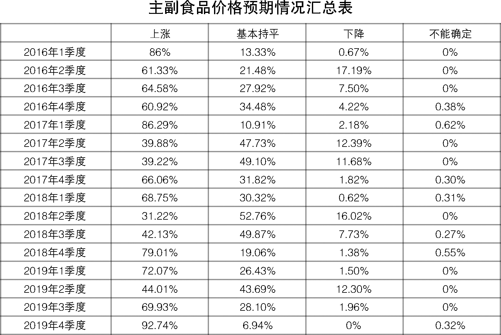
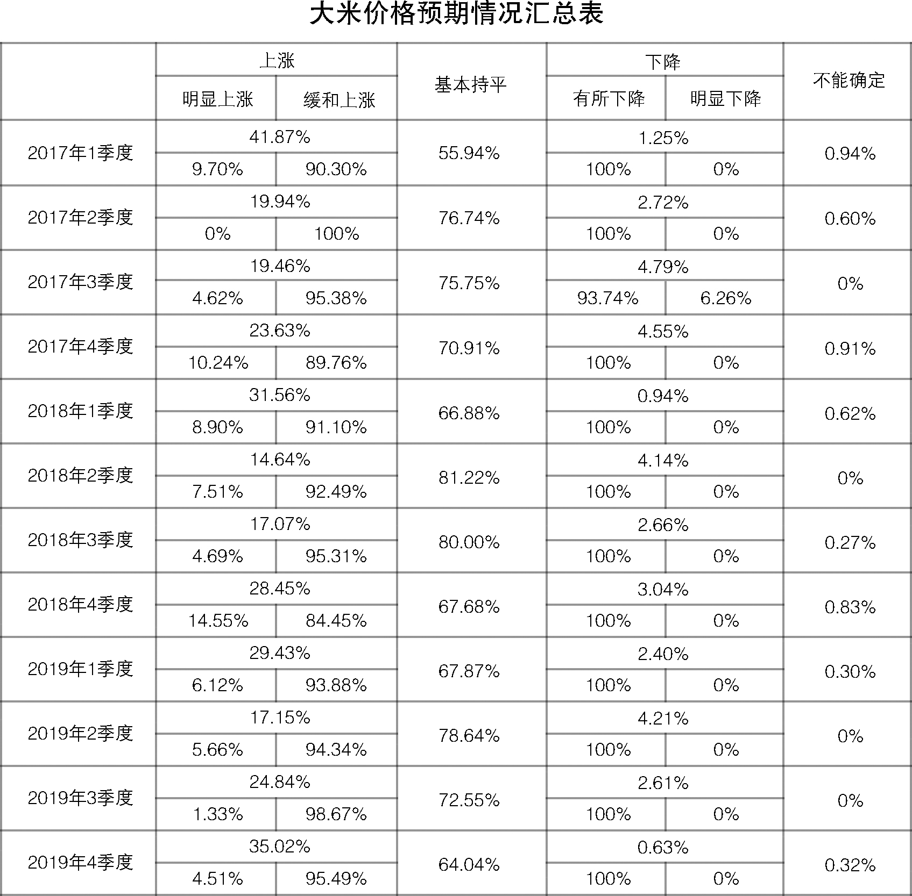
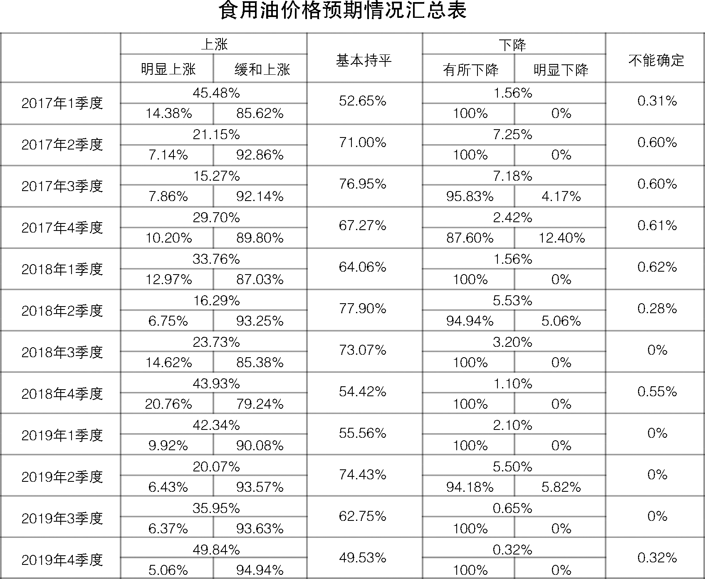
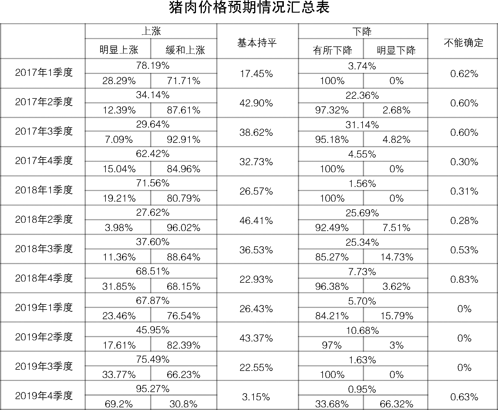
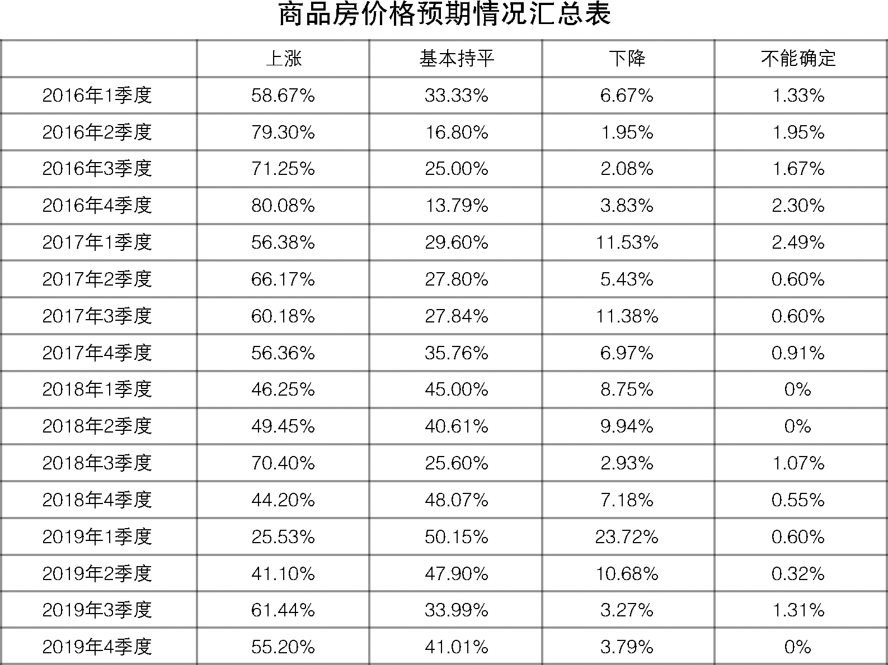
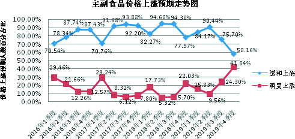
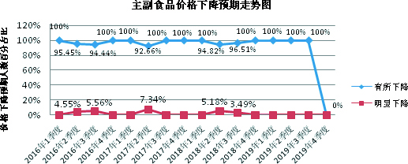
三、商品房价格上涨预期有所减弱，呈稳中缓涨预期
调查结果显示，预计2019年四季度商品房总体价格上涨175人，占比55.2%，其中预计缓和上涨162人、明显上涨13人，分别占92.57%、7.43%；预计总体价格基本持平130人，占比41.01%；预计总体价格有所下降12人，占比3.79%，无人预计明显下降。
调查结果显示，超五成的人预计三季度商品房总体价格上涨，其中预计缓和上涨的人数超过九成；约四成的人预计商品房总体价格基本持平；极少数的人预计商品房价格下降。总体来看，四季度商品房总体价格呈稳中缓涨预期。
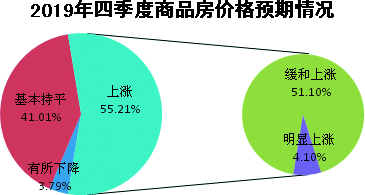
从本期商品房价格预期走势看，本期商品房总体价格上涨预期有所回落，较三季度减少了6.24个百分点；与去年同期的44.21%相比，增加11个百分点。
与上期33.99%的人预计商品房总体价格基本持平相比，本期增加了7.02个百分点；与去年同期的48.07%相比，本期减少了7.06个百分点。
与上期3.27%的人预计商品房总体价格下降相比，本期持下降预期的人数略有上升，增加0.52个百分点；与去年同期的7.18%相比，减少3.39个百分点。
调查表明，四季度商品房总体价格看涨预期有所降温，由三季度的以缓涨预期为主转为以稳中缓涨预期为主。与去年同期相比，四季度上涨预期虽略有提升，但变化并不明显。
从全省各地商品房价格预期情况来看，与上期相比，四季度我省各地商品房价格看涨预期普遍有所回落。其中，南京、无锡、徐州、常州、南通、连云港、盐城、扬州、镇江、宿迁10个市商品房价格以缓涨预期为主，其中仅有3个市持上涨预期的人数占比超七成；苏州、泰州2个市商品房价格以稳中缓涨预期为主；淮安商品房价格以看平预期为主。
在经济社会高质量发展的背景下，房地产行业也迫切需要向高质量发展转型升级，以夯实房地产市场健康发展的根基。7月底召开的中共中央政治局会议明确提出“不将房地产作为短期刺激经济的手段”，这意味着即使在经济承压的背景下，“四限”调控政策仍将从紧执行，“房住不炒、因城施策”政策主基调不变。从商品房价格预期走势图可以看出，受“房住不炒”定位不变、房地产调控持续加码、房地产金融政策缩紧等多重因素叠加影响，房价上涨刚性预期正在被打破，购房者对于房地产市场的期望已悄然发生变化，刚刚过去的“金九”楼市表现平淡，即将到来的“银十”恐也难有太大起色。各级政府及有关部门应密切关注房地产市场变化，保持调控政策的稳定性和连续性。
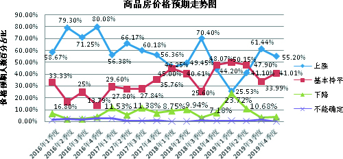
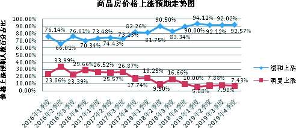
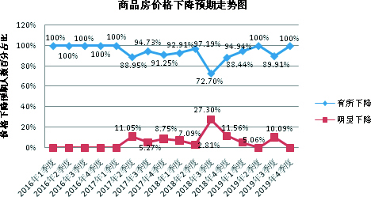
江苏省物价局-江苏省物价局网站
二○一九年十月